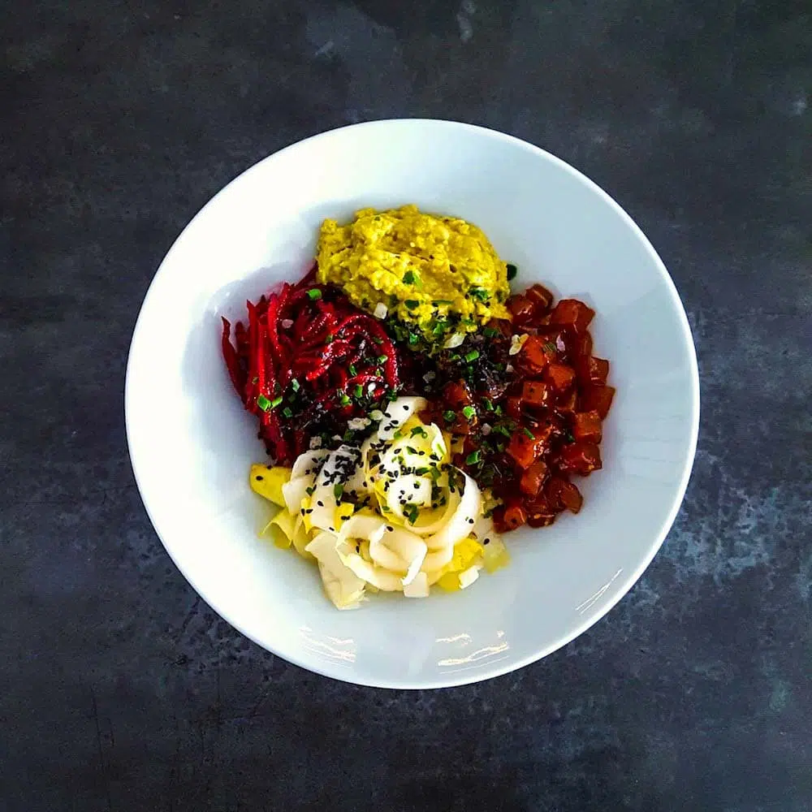

Bowl de saison

Vous ne verrez plus vos restes de la même façon:
Un bowl coloré et équilibré, à base de céréales, légumes rôtis et sauce tahini — personnalisable selon les légumes de saison disponibles.
Ingrédients :
- 200g de quinoa (ou riz)
- 1 patate douce
- 1 courgette
- Pois chiches croustillants (optionnel)
- 2 cuillères à soupe de tahini
- 1 citron
- Graines de sésame
Étapes :
- Cuire le quinoa selon les instructions du paquet
- Couper la patate douce et la courgette en dés
- Rôtir les légumes au four 25 minutes à 200°C
- Préparer la sauce : mélanger tahini, jus de citron, un peu d'eau
- Disposer le quinoa dans un bol, ajouter les légumes rôtis
- Napper de sauce tahini, parsemer de graines de sésame